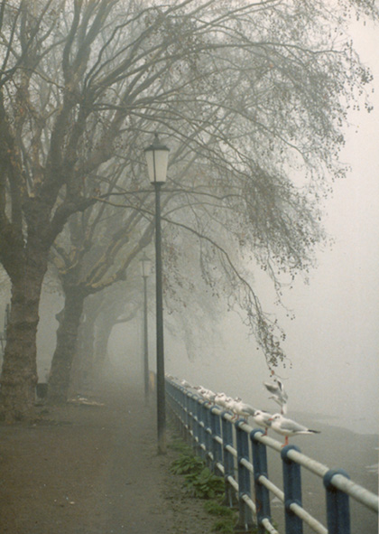
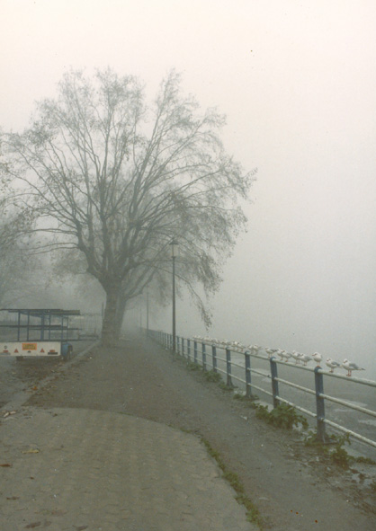
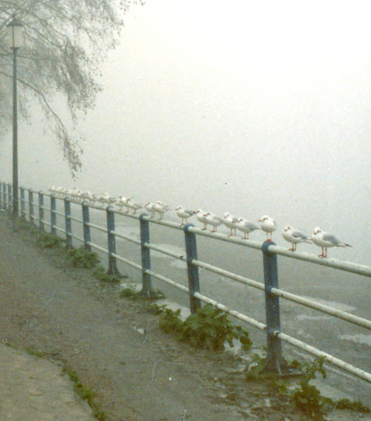

Wednesday, November the 10th, 2010
back to: title, date or indexes
Last week we looked at self-tidying swans, and we can now extend our ornithological researches courtesy of Johnny Seven. Mr Seven, incidentally, is a man to whom you should be profoundly thankful. Not only does he present the excellent “Pull The Plug” show on ResonanceFM, but he is currently the sound engineer charged with making sure Mr Key's dulcet tones are transmitted into your ears every week.
Long, long ago, in the last century, Johnny snapped a gang of self-tidying seagulls. He writes: “Taken on Tuesday 10th December 1984 (I know this since it's written on the back of the photographs), I was interested in the slate-grey blanket of fog shrouding the trees on the embankment in Putney. No sooner had I set up the tripod than the hungry birds came (picture no.1). See their expectant little faces. Imagine their disappointment when croutons were not scattered. I moved further back to get a wider (and, to be honest, less pleasingly composed) view, and the gulls moved further up the railing toward me, increasing in number (picture no.2, and detail).”



You will note that, unlike the self-tidying swans, these self-tidying gulls are not accompanied by an equal number of water gulls. This is due to their choice of emperchment, upon railings, if, indeed, it was a conscious choice. Who can say what weird shenanigans occur in the tiny brains of birds? One thing we can be sure of is that they know how to line up very neatly, with the precision for which self-tidying gulls are applauded, in some circles.